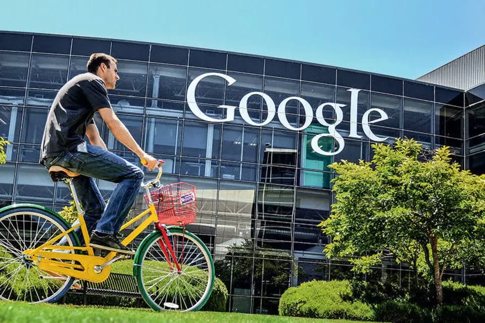

Futuro
Minha Expectativa

Desejo me tornar um profissional de T.I. de excelência, com uma carreira estável e financeiramente sólida, para poder ajudar minha família. Acredito que, com muito esforço e dedicação, posso alcançar meu objetivo de ingressar em uma grande empresa de tecnologia (Big Tech) e até mesmo considerar a possibilidade de me mudar para outro país. Espero abrir esta cápsula do tempo no futuro, olhar para trás e sorrir, pois tudo terá dado certo. Até breve!